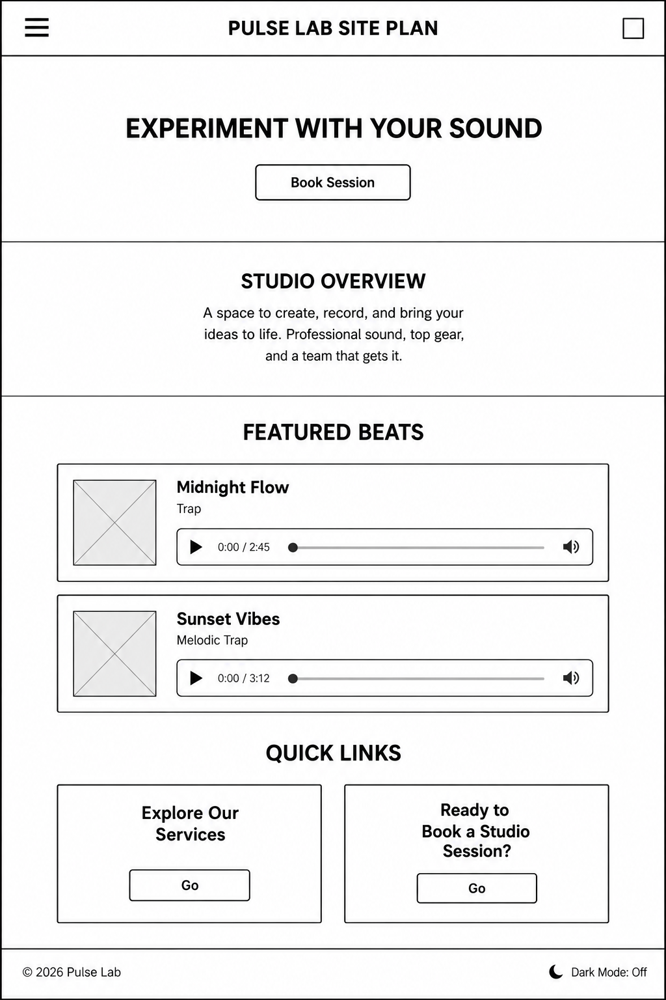
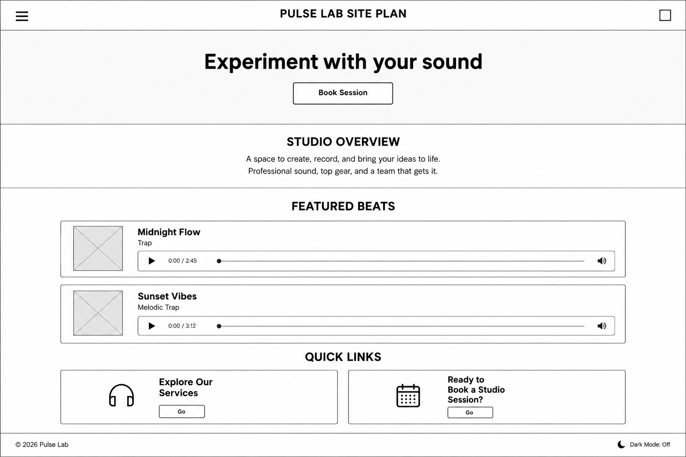

Site Name
Pulse Lab
The name combines the "pulse" of a beat with the "lab" feel of experimenting with sound. It is short, memorable, and clearly tied to music production.
Optional domain availability: pulselab-studio.com
Site Purpose
Pulse Lab is an information site for an independent music production studio. It lists the studio's services (beat production, mixing and mastering, recording sessions), previews featured beats, and lets artists book a session through a contact form.
Scenarios
- What services does the studio offer, and how much do they cost?
- Can I hear examples of the studio's work before I book?
- How do I book a session and what information do I need to provide?
Color Scheme
| Color | Hex | Usage |
|---|---|---|
| Midnight | #12101C | Page background |
| Deep Violet | #1E1B2E | Section cards, table rows, header |
| Soft White | #F4F4F8 | Paragraph text |
| Pulse Pink | #FF4F9A | Headings |
| Signal Cyan | #3DE0FF | Borders, links, accents |
Typography
- Oswald: used for all headings (h1, h2, h3).
- Inter: used for paragraphs, lists, and table text.
Heading sample: Oswald Bold
Body sample: Inter Regular, the quick brown fox jumps over the lazy dog.
Wireframe

